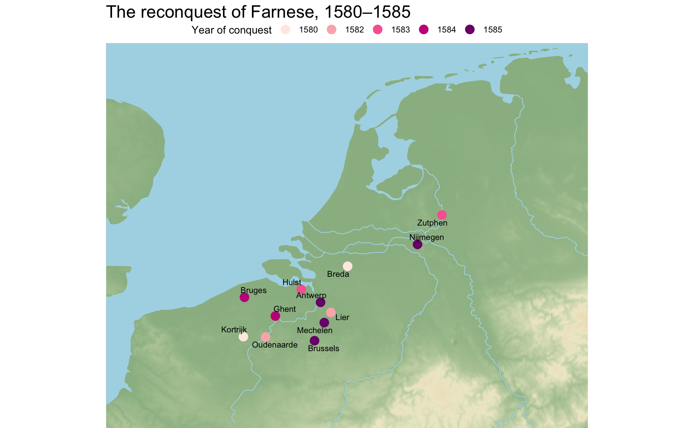

The historical context
The advance of the armies of Alexander Farnese into Flanders from 1580, culminating in the capture of Antwerp in August of 1585 precipitated a period of mass mobility as both rebels and loyalists traveled to avoid the dangers of war and those associated with the Revolt were eventually forced into exile. The troubles began much before 1585.1
The below map shows the major events in the reconquest of Farnese in the first half of the 1580s. It includes the plotting code used to make the map.
ggplot(data = reconquest) +
geom_spatraster(data = lc_raster, alpha = 0.6,
show.legend = FALSE) +
scale_fill_whitebox_c(palette = "atlas", direction = 1) +
geom_sf(data = oceans, color = NA, fill = "lightblue") +
geom_sf(data = rivers, color = "lightblue", size = 0.4) +
geom_sf(aes(color = factor(date)), size = 4) +
geom_text_repel(aes(x = long, y = lat, label = location),
size = 3) +
scale_color_brewer(palette = "RdPu") +
coord_sf(xlim = c(3400000, 3900000),
ylim = c(2600000, 3000000),
expand = FALSE, datum = NA) +
labs(title = "The reconquest of Farnese, 1580–1585",
color = "Year of conquest") +
theme_void() +
theme(plot.title = element_text(size = 18),
legend.position = "top",
legend.direction = "horizontal")
Footnotes
Peter Arnade, Beggars, Iconoclasts, and Civic Patriots: The Political Culture of the Dutch Revolt (Cornell University Press, 2008), https://www.jstor.org/stable/10.7591/j.ctv5rf3pp; Violet Soen, “Reconquista and Reconciliation in the Dutch Revolt: The Campaign of Governor-General Alexander Farnese (1578–1592),” Journal of Early Modern History 16, no. 1 (2012): 1–22, https://doi.org/10.1163/157006512X620627.↩︎